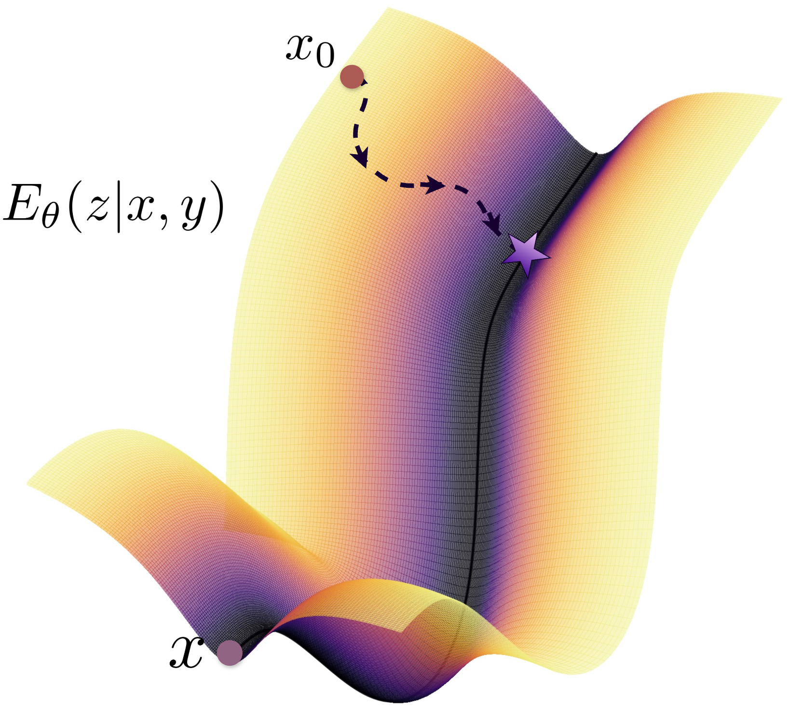
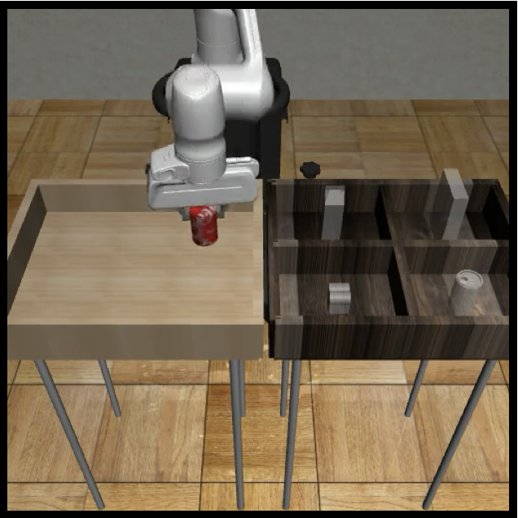
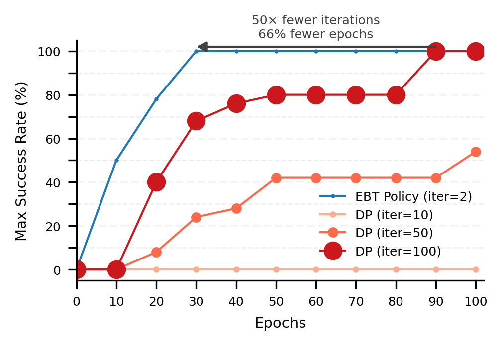
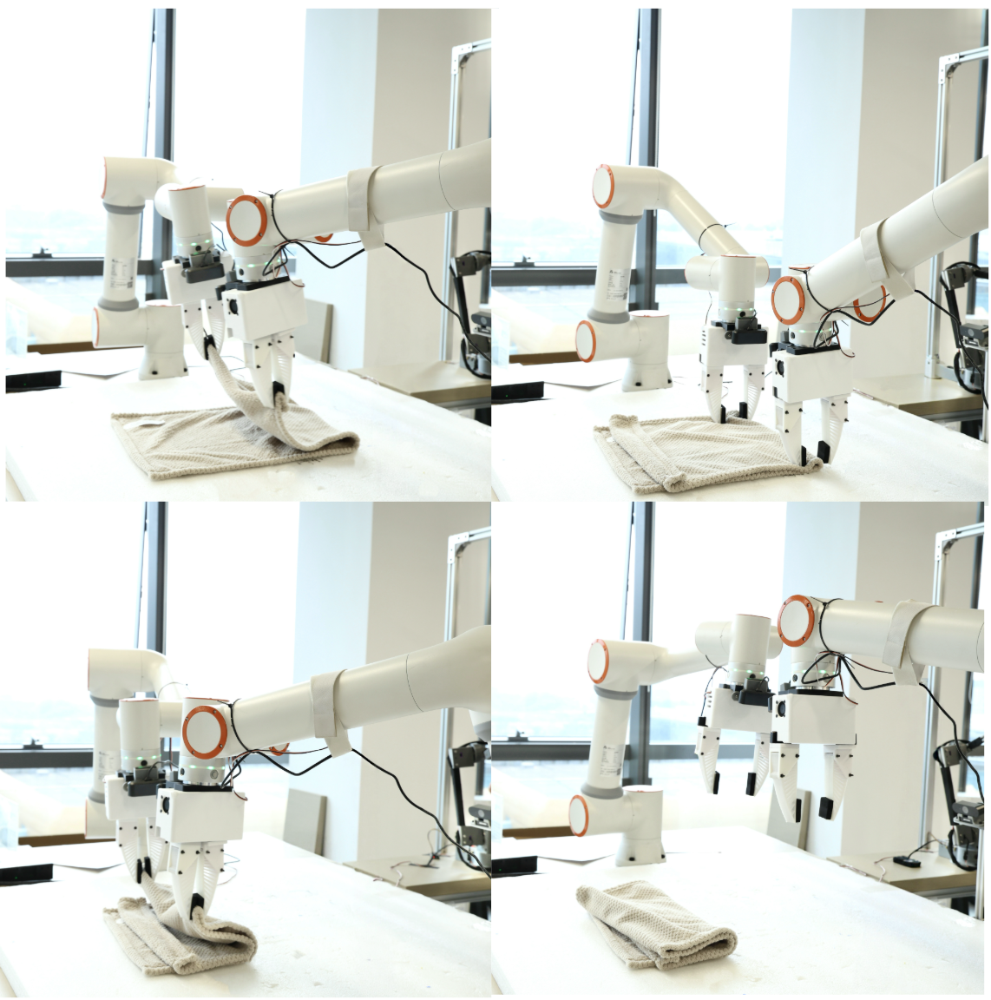
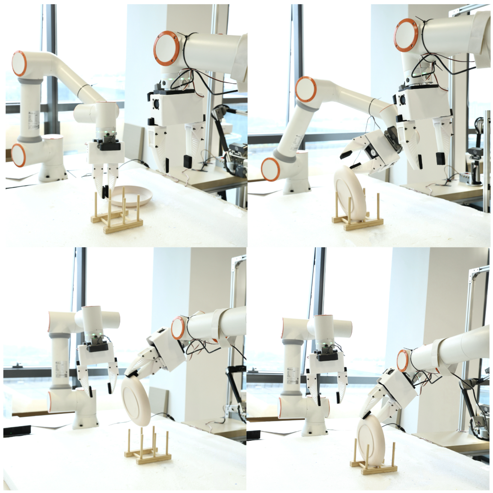
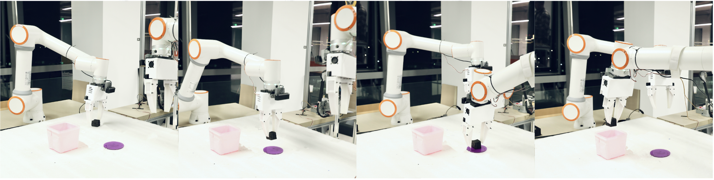
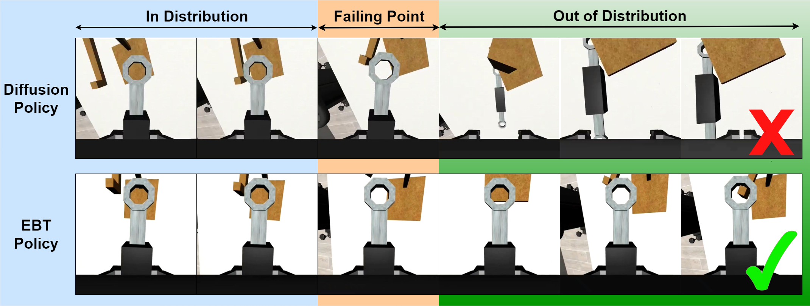
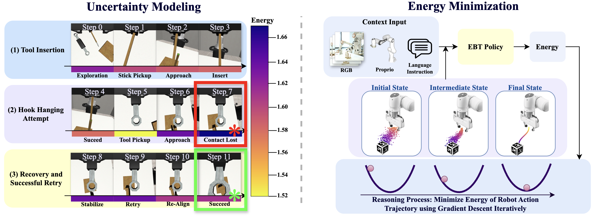

An interactive explainer
EBT-Policy: Energy Unlocks Emergent Physical Reasoning
Behavior cloning has a default engine: Diffusion Policy, which generates a robot's next moves by reversing a fixed noise schedule — roughly a hundred tiny denoising steps from static to a plan. It works, but it is slow, it drifts when the world surprises it, and once it drifts it cannot recover. EBT-Policy throws out the noise schedule. It learns a single energy landscape over action trajectories and generates by rolling downhill — argmin, not denoise. The payoff: the same task solved in as few as 2 inference steps instead of 100 (a 50× cut), in 55% fewer training epochs, and — most strikingly — a behavior-cloned policy that retries after a failure it was never trained to recover from.

Teaching a robot to fold a towel or hang a tool by showing it human demonstrations is called behavior cloning. The hard part isn't memorizing one good motion — it's that for any observation there are many reasonable next moves, and a naive network that regresses to the average of them produces mush. The field's answer, borrowed from image generation, was to make the policy generative: model the whole distribution of plausible action sequences and sample from it. Diffusion Policy did exactly that and became the default.
But a diffusion policy carries diffusion's baggage into the robot. It denoises along a fixed, externally-imposed schedule; it needs many forward passes per decision; and its chain-structured sampling means an early mistake compounds downstream. In a simulator that's an annoyance. On a real arm, where contact forces nudge the world out of distribution every few seconds, it's a failure mode.
This paper asks: what if the policy learned the energy of an action sequence directly — a single scalar saying "how compatible is this plan with what I see?" — and generated by minimizing it? That one change buys speed, robustness, and a behavior nobody put in the training set.
1. The diffusion default, and its cracks
Diffusion Policy is a score-based model. During training it corrupts a demonstration trajectory with noise and teaches a network $\epsilon_\theta(\mathbf{a}_t, t, \ell, \mathbf{o}_t)$ to undo one step of that corruption. Through denoising score matching, the network ends up estimating the gradient of the log-likelihood of demonstrations,
$$ \nabla_{\mathbf{a}} \log p(\mathbf{a}\mid \ell, \mathbf{o}_t), $$
— the direction in action space that makes a trajectory more like the demonstrations. At inference you start from pure noise and follow this score downhill for a fixed number of steps (often 100), and out pops a feasible plan. It is stable and it models multimodality well. So what's wrong?
Three things, all rooted in the same design decision — the reliance on an external noise schedule. First, cost: the schedule dictates the number of denoising steps, and that number is large. Second, exposure bias: training always conditions on a correctly noised input, but at inference the model conditions on its own imperfect intermediate outputs; the train/test mismatch lets errors accumulate down the chain. Third, and worst for robotics, brittleness under distribution shift: a diffusion policy commits to a denoising trajectory. If the world shoves it into a state it never saw — the hook slips, the towel bunches — there is no mechanism that pulls it back toward feasible behavior. It drifts, and the drift compounds.
2. Energy, not score
An Energy-Based Model represents a distribution with a single learned scalar function, the energy, through a Boltzmann form:
$$ p_\theta(\mathbf{a}) = \frac{e^{-E_\theta(\mathbf{a})}}{Z(\theta)}. $$
Low energy means high probability. The partition function $Z(\theta)$ is intractable, so EBT-Policy uses an unnormalized EBM: it never computes $Z$, only relative energies, which is all you need to find a minimum. The energy $E_\theta(\ell, \mathbf{o}_t, \mathbf{a})$ scores how compatible a candidate action sequence $\mathbf{a}$ is with the language goal $\ell$ and the recent observations $\mathbf{o}_t$. Generation is then just an optimization:
$$ \pi:\quad \argmin_{\mathbf{a}\in\mathcal{A}^n}\ E_\theta(\ell, \mathbf{o}_t, \mathbf{a}). $$
Here is the key relationship that makes this feel familiar. Differentiate the Boltzmann form and the score a diffusion model learns is exactly the negative gradient of the energy:
$$ \nabla_{\mathbf{a}} \log p(\mathbf{a}\mid \ell, \mathbf{o}_t) = -\,\nabla_{\mathbf{a}} E_\theta(\ell, \mathbf{o}_t, \mathbf{a}). $$
So diffusion and EBTs are looking at the same landscape from two heights. Diffusion learns the gradient of the energy (the slope, everywhere, as a function of noise level). An EBT learns the energy itself (the height). That sounds like a minor bookkeeping difference. It is not — having the scalar in hand is what gives EBT-Policy a built-in verifier, a notion of certainty, and a way to recover. Drag the probe below to feel the distinction.
3. Generating actions by rolling downhill
Concretely, EBT-Policy is an Energy-Based Transformer. At each timestep it takes an $h$-step window of observations — RGB frames $X_{t-h+1:t}$ and proprioceptive states $z_{t-h+1:t}$ — plus an optional language instruction $\ell$, and it must output the next $n$ actions $a_{t:t+n-1}$. It does this by initializing a trajectory from pure noise and repeatedly stepping it downhill on the energy:
$$ \hat{\mathbf{y}}_{i+1} = \hat{\mathbf{y}}_{i} - \alpha_i\, \nabla_{\hat{\mathbf{y}}} E_\theta(\mathbf{x}, \hat{\mathbf{y}}_{i}) + \eta_i. $$
That update is gradient descent on the energy with a step size $\alpha_i$ and a dash of injected noise $\eta_i$ — which makes it Langevin dynamics, a Markov-Chain Monte Carlo sampler. The noise lets the search explore rather than fall into the nearest dent; the gradient pulls it toward compatible actions. Crucially, the path from noise to a plan is learned end-to-end: there is no noise schedule, no ODE solver, no fixed number of steps the model must obey. It takes whatever route down the landscape works.
A candidate action trajectory starts as noise high on the learned energy landscape and rolls downhill — over a couple of shallow local minima (competing modes) — into the deep basin of valid actions. Then a covariate shift knocks it out-of-distribution, and it re-descends on its own. That last move is the emergent retry we'll come back to in §7.
The widget below lets you be the physics. Drop a noise initialization anywhere, then watch the candidate descend. Crank the Langevin noise up and it escapes shallow minima but jitters; turn it down and it converges precisely but can get stuck. The descent stops itself when the gradient flattens out — hold that thought for §5.
4. The recipe: making EBMs trainable
Energy-based policies are an old idea (Implicit Behavior Cloning tried it in 2021) that never caught on, for two stubborn reasons. (1) Multimodality tempts local minima: demonstration data has many valid modes, and naive energy training carves spurious wells the sampler falls into. (2) The MCMC chain explodes: backpropagating through a long sequence of gradient-descent steps is like training a deep recurrent net — gradients blow up. EBT-Policy's contribution is a set of concrete tricks that defuse both, while keeping a modern Transformer and a regularized (not contrastive) loss. The training-only tricks promote exploration across modes:
- Randomized sampling steps. The number of MCMC steps is randomized each iteration, so the model learns to reach the basin from many chain lengths rather than memorizing one.
- Scaled Langevin dynamics with cosine annealing. Injected noise decays from $\sigma_{\max}$ to $\sigma_{\min}$ over the chain — broad exploration early, precise convergence late:
$$ \sigma_t = \sigma_{\min} + \tfrac{1}{2}\left(\sigma_{\max} - \sigma_{\min}\right)\left[\,1 + \cos\!\left(\frac{\pi\, t}{T}\right)\right]. $$
- Step-size randomization. The initial step is drawn as $\eta \sim \mathcal{N}(\eta_b/c,\ \eta_b\, c)$, diversifying sampling trajectories.
- Nesterov acceleration. Momentum smooths traversal of the landscape and helps escape shallow minima — exactly what you saw the ball do in the animation.
And three mechanisms keep the optimization from detonating:
- Energy-scaled step sizes. The step grows with predicted energy, so the model takes bold steps when far from a minimum and gentle ones near it: $\alpha_i = \eta\, \exp\!\big(E_\theta(\mathbf{x}, \hat{\mathbf{y}}_i)\big)$.
- Pre-sample normalization. Trajectories are RMSNorm-ed to $[-1,1]$ before entering the network, preventing runaway action magnitudes.
- Gradient clipping to a global norm of 1.0 — which the authors call empirically the single most critical ingredient for stable training.
| Base step size $\eta_b$ | 1000 | Step-size scaling $c$ | 1.5 |
| Min. LD scale $\sigma_{\min}$ | 0.002 | Max. LD scale $\sigma_{\max}$ | 0.2 |
| Base MCMC train steps | 6 | Randomized extra steps | 3 |
| Max MCMC inference steps | 20 | Gradient-clip norm | 1.0 |
The training loop itself is short. Notice the loss: at every MCMC step the partially-descended trajectory is compared to the ground-truth demonstration. This is the EBT trick — supervise the whole descent, not just its endpoint — and it sidesteps the exponential negative-sampling that sank contrastive energy policies.
EBT-Policy training step (context x, target y)
ŷ₀ ~ N(0, I) # start from pure noise
z ← f_θ(x) # encode RGB + proprio + language
L ← 0
for i = 0 … N-1:
ŷᵢ ← RMSNorm(ŷᵢ) + N(0, σᵢ) # pre-norm + annealed Langevin noise
ŷᵢ₊₁ ← ŷᵢ − αᵢ · ∇_ŷ E_θ(z, ŷᵢ) # energy-scaled descent step
L ← L + MSE(ŷᵢ₊₁, y) # supervise every step
update E_θ with ∇L (clip grad norm to 1.0)5. Dynamic inference: think longer when unsure
A diffusion policy always runs its fixed number of steps, whether the decision is trivial or treacherous. EBT-Policy doesn't have a step count baked in — it has a stopping criterion. It keeps descending until either it hits a step ceiling $N$ or the energy gradient norm $\lVert g\rVert_2$ drops below a threshold $\tau$:
EBT-Policy dynamic inference (context x)
ŷ₀ ~ N(0, I); z ← f_θ(x); i ← 0; g ← ∞
while i < N and ‖g‖₂ > τ:
ŷᵢ ← RMSNorm(ŷᵢ)
g ← ∇_ŷ E_θ(z, ŷᵢ) # the gradient *is* the certainty signal
ŷᵢ₊₁ ← ŷᵢ − αᵢ · g
i ← i + 1
return ŷBecause the gradient norm measures how far the trajectory still is from a minimum, this loop spends compute where it's needed: an easy, in-distribution state converges in one or two steps; a hard or uncertain state earns more. This is System-2-style adaptive computation, falling out for free from the energy formulation — no separate controller, no learned halting head. The scalar energy is doing double duty as both the objective and the confidence meter.
6. Results: faster, cheaper, better
Two variants are tested. EBT-Policy-S (~30M params, ResNet-18 vision) copies Diffusion Policy's architecture exactly for an apples-to-apples simulation comparison on robomimic. EBT-Policy-R (~100M, DINOv3 vision, T5 language) is the real-world, language-conditioned, multitask model deployed on a dual-arm tabletop rig. All baselines are diffusion transformers of comparable size trained on identical data — no billion-parameter VLA pretraining muddying the comparison.

In simulation, EBT-Policy-S beats Diffusion Policy on every task — and does it whether DP is given its preferred 100 inference steps or starved to 10. At 10 steps, DP simply fails (0% everywhere); EBT-Policy stays strong at just 2 steps. On the hardest task, Tool Hang, it improves the success rate by 24 points.
| Simulated task (success %) | Lift | Can | Square | Tool Hang |
|---|---|---|---|---|
| Diffusion Policy (n=10) | 0 | 0 | 0 | 0 |
| Diffusion Policy (n=100) | 100 | 100 | 92 | 44 |
| EBT-Policy-S (n≈2) | 100 | 100 | 98 | 68 |
On the real dual-arm rig the gap widens where it matters most — deformable, contact-rich manipulation. On Fold Towel, Diffusion Policy manages 10%; EBT-Policy-R hits 86%.
| Real-world task (success %) | Fold Towel | Collect Pan | Pick & Place |
|---|---|---|---|
| Diffusion Policy | 10 | 65 | 90 |
| EBT-Policy-R | 86 | 75 | 92 |

Put together: ~50× fewer inference iterations, ~55% fewer training epochs, and higher final success — the efficiency story isn't a trade-off against quality, it's a clean win. The widget below sweeps the inference-step budget so you can watch the two policies diverge.



7. The surprise: retry without retry data
Here is the result that makes this paper more than an efficiency note. On Tool Hang, the authors nudge the hook into a configuration the policy never saw — a genuine out-of-distribution perturbation. Diffusion Policy does what diffusion policies do: it loses the plot, releases the tool, and diverges. EBT-Policy, with no retry demonstrations and no reward signal, re-grasps, repositions, and completes the task. To the authors' knowledge, this is the first time a vanilla behavior-cloned policy — one that only ever outputs instantaneous actions — has shown emergent retry.

Why would minimizing an energy produce retrying? Because the energy is defined over the whole trajectory and is time-invariant: a failed, out-of-distribution state is simply a high-energy state, and the only thing the policy ever does is descend energy. So the same machinery that found the plan in the first place hauls a derailed robot back toward feasible behavior. The authors verify this by tracking the predicted energy through a rollout: it spikes at the failed contact (the red frame), then falls as the robot re-establishes a good grasp (the green frame).

The widget makes the contrast tactile. Knock the agent out of distribution and watch what each policy does: the diffusion baseline keeps following its schedule off a cliff; EBT-Policy's energy spikes and then it climbs back into the basin.
8. Why this works
Three properties of the energy formulation, each doing real work, explain the whole results table.
Equilibrium dynamics, not a one-way chain
A diffusion policy walks a fixed path from noise to data; if a real-world disturbance teleports it off that path, nothing returns it. An EBT learns a single, static energy surface whose gradients point toward the data manifold from everywhere. Out-of-distribution points are just uphill, and descent brings them back. This is what kills exposure bias and compounding error — and, the authors argue, what lets the policy converge in a couple of steps instead of a hundred: it isn't bound to a schedule or an ODE solver dictating a slow route.
The scalar energy is an uncertainty meter
Because the model outputs a number, not just a direction, it knows when it's unsure: uncertainty shows up as high energy or a landscape with several competing minima. That lets the policy spend more descent steps on hard states and fewer on easy ones (§5), and it makes failures legible — you can literally plot the robot's confidence over time, as in Figure 5.
A built-in verifier makes it robust
The same scalar acts as a discriminator: low energy ⇒ plausible, high energy ⇒ reject. A diffusion policy is purely generative — it has no native way to say "this state is bad." EBT-Policy does, and that discriminative signal is what makes it noticeably less brittle when the environment changes. Robustness and retry are two faces of the same coin: a model that can recognize a bad state can also climb out of it.
9. What it means
The honest framing is that this is an early, ambitious paper — the authors say as much, noting that Diffusion Policy still wins on raw training stability and mode coverage, and that their simulation numbers trail the original DP paper's because of hyperparameter differences. What's exciting isn't a leaderboard sweep; it's that a single learned energy function delivers efficiency, uncertainty-awareness, and recovery at the same time, from plain behavior cloning. That bundle is the start of an energy-based world model for manipulation: one scalar measuring the consistency of observations, language, actions, and dynamics together.
Open problems
- Training stability. Long MCMC chains are still finicky; gradient clipping is load-bearing, and richer multimodal data will stress the recipe.
- Mode coverage. Energy training can under-represent valid modes that diffusion captures easily — closing that gap is the central technical fight.
- Scale. Everything here is ≤100M parameters by design, for fair comparison. Whether the emergent reasoning grows or breaks at VLA scale is wide open.
The bottom line
Diffusion taught robots to generate actions. EBT-Policy suggests they should evaluate them — learn how good a plan is, and act by improving it. Once the policy holds a scalar that means "how compatible is this with reality," speed, confidence, and the ability to recover from surprise stop being separate features you bolt on. They become the same thing: rolling downhill.